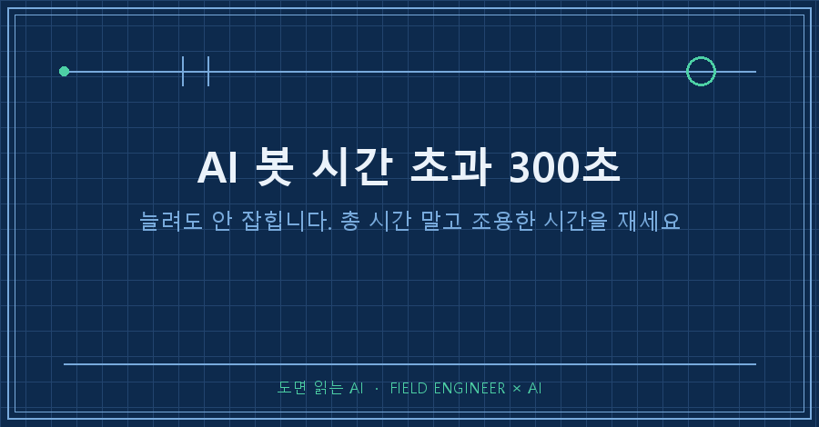
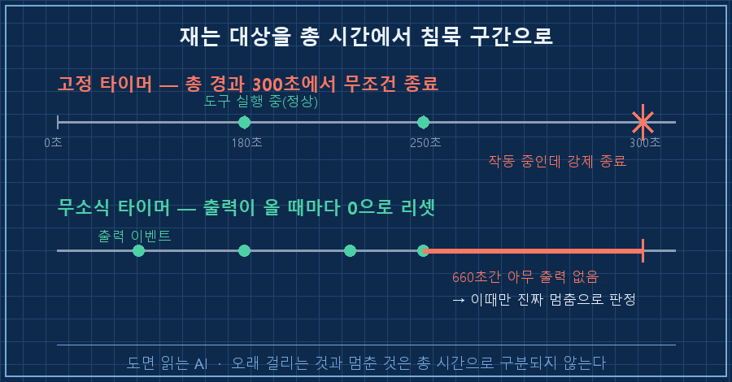
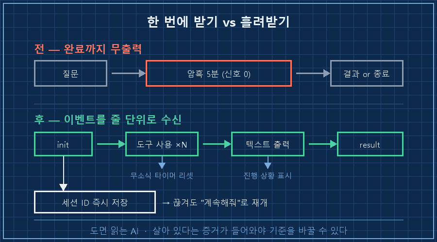

폰으로 제 AI한테 일을 하나 시켜놓고 기다렸더니, 5분 만에 이 답이 돌아왔습니다.
시간 초과(300초). 질문을 더 짧게 해보세요저 안내문은 제가 직접 적어둔 문장이에요. 6월에 봇을 만들면서 넣어놨고, 두 달쯤 지나서야 저게 틀린 말이라는 걸 알았습니다.
결론은 짧습니다.
AI 봇 시간 초과는 제한 시간을 늘려서 푸는 게 아니라, 시간을 재는 기준을 바꿔서 풉니다. 전체 경과 시간이 아니라 조용한 시간으로요. 마지막 출력이 나온 뒤로 아무 소식이 없던 시간 말입니다. 오래 걸리는 작업과 정말로 멈춘 작업은 총 시간만 봐서는 절대 구분이 안 되거든요.
제 본업은 자동화 설계입니다. 십오 년 동안 기계가 죽었는지 살았는지 판단하는 회로만 붙들고 살았어요.
그쪽에서 쓰는 방식이 정확히 이겁니다. 몇 시간째 돌고 있는지로 정상 여부를 따지지 않아요. 약속된 신호가 정해진 초 안에 다시 오느냐만 봅니다. 신호가 오면 시계를 0으로 되돌리고요. 제가 만든 봇에는 그게 빠져 있었습니다.
2026년 8월 기준이고요. 파이썬으로 외부 CLI 도구를 프로세스로 띄워 쓰는 구조면 어떤 AI를 물리든 그대로 적용되는 이야기입니다.
1. 원인은 질문 길이가 아니라 작업 시간이었어요
원래 코드는 이렇게 한 줄이었습니다.
r = subprocess.run(cmd, capture_output=True, timeout=300)호출해놓고 끝날 때까지 기다렸다가, 300초가 지나면 죽이는 방식이에요. 짧은 질문은 잘 돌아갑니다. 문제는 AI가 파일을 뒤지거나 명령을 실행해야 하는 일이었어요.
그런 작업은 5분을 넘기는 게 정상입니다. 그런데 제 코드는 그걸 고장으로 처리하고 죽여버렸어요. 작동 중인 걸 죽인 겁니다.
더 나빴던 건 안내 문구였습니다. "질문을 더 짧게 해보세요"라고 띄워놨거든요.
그래서 저는 한동안 질문을 줄여가며 썼습니다.. 원인을 잘못 짚은 안내문이 사용자를 엉뚱한 방향으로 두 달간 끌고 다닌 셈이에요. 자동화에서 제일 비싼 버그는 대개 이런 쪽이더라고요. 틀린 진단이 친절하게 적혀 있는 것.
2. 300을 600으로 바꾸면 될까요
제일 먼저 든 생각은 당연히 숫자 키우기였습니다. 300을 600으로, 안 되면 1800으로요.
근데 그러면 두 가지가 같이 나빠집니다.
| 방식 | 오래 걸리는 정상 작업 | 진짜로 멈춘 작업 |
|---|---|---|
| 고정 300초 | 죽여버림 (오판) | 5분 뒤 정리 |
| 고정 1800초 | 살려둠 | 30분간 방치 |
| 무소식 660초 | 살려둠 | 11분 뒤 정리 |
숫자를 키우면 정상 작업은 살아나는데, 멈춰버린 프로세스도 같이 30분을 붙잡고 있게 돼요. 반대로 줄이면 멀쩡한 작업이 잘려나가고요.
고정 시계 하나로는 이 둘을 동시에 만족시킬 수가 없습니다. 애초에 일하는 중인지 아닌지를 총 시간으로 판정하려던 게 잘못이었어요.
여기서 진짜 문제가 보였습니다. 출력을 완료 시점에 한 번에 받는 구조라, 봇 입장에서 그 5분은 통째로 암흑이었던 거예요. 살아 있다는 증거가 애초에 들어오질 않으니 기준을 바꾸고 싶어도 잴 게 없었습니다.

3. 출력을 흘려받고, 무소식 시간을 쟀습니다
그래서 호출 방식부터 바꿨어요. 결과를 한 번에 받는 대신, 진행 상황을 줄 단위로 흘려받는 스트리밍 형식으로요. 요즘 AI CLI 도구들은 대부분 이런 출력 옵션을 갖고 있습니다.
그리고 판정 기준을 이렇게 잡았습니다.
IDLE_TIMEOUT_SEC = 660 # 마지막 출력 이후 무소식 허용치
TOTAL_TIMEOUT_SEC = 3600 # 그래도 한 시간이면 끊는다660이라는 숫자에는 근거가 있어요. 제 AI가 쓰는 명령 실행 도구의 자체 최대 대기가 600초입니다. 그 한 판이 통째로 조용할 수 있으니, 그보다 1분 넉넉하게 잡은 값이에요. 여기가 사람마다 갈리는 지점입니다. 가장 오래 침묵할 수 있는 도구의 한계값 + 여유로 잡으면 됩니다.
읽는 부분은 이 모양이 됩니다. 한 줄 기다리는 데에만 제한을 걸고, 전체 상한은 따로 두는 구조예요.
line = await asyncio.wait_for(
proc.stdout.readline(),
timeout=min(IDLE_TIMEOUT_SEC, remaining))한 줄 읽을 때마다 타이머가 처음으로 돌아갑니다. 도구를 열 번 쓰든 서른 번 쓰든, 뭔가 나오고 있는 한 안 죽어요.
덤으로 이벤트를 세서 "3분 12초 경과, 도구 7회 사용"처럼 진행 상황을 폰에 계속 띄울 수 있게 됐습니다. 기다리는 쪽에선 이게 생각보다 커요. 멈춘 건지 일하는 건지 알 수 있으니까요.

기준을 바꿔도 상한은 존재합니다. 한 시간이 넘으면 결국 끊어요.
그래서 한 가지를 더 넣었습니다. 대화 세션 ID를 작업이 끝날 때가 아니라 시작하자마자 파일에 적어두는 겁니다.
if t == "system" and data.get("subtype") == "init":
if data.get("session_id"):
save_session(data["session_id"]) # 시작 즉시 저장전에는 정상 완료됐을 때만 저장했어요. 그러니 끊기면 맥락이 통째로 증발했습니다. 처음부터 다시 설명해야 했고요.
지금은 중간에 끊겨도 "계속해줘" 한마디면 하던 자리에서 이어집니다. 안내 문구도 정직하게 고쳤어요. 질문이 길어서가 아니라 오래 걸려서 끊었다고, 이어서 하려면 뭐라고 치면 되는지까지요.
AI 봇 시간 초과 자체는 여기까지가 코드 쪽 이야기입니다. 진짜 사고는 그다음에 났어요.
4. 고치자마자 봇을 두 개 띄웠습니다
수정한 봇을 올리려고 기존 프로세스를 죽이고 새로 실행했어요. 그런데 화면에 검은 콘솔 창이 하나 떠 있는 겁니다. 원래는 안 보이는 게 정상인데요.
확인해보니 봇이 두 개 돌고 있었습니다.
제가 6월에 만들어둔 감시 스크립트를 잊고 있었어요. 봇이 죽으면 10초 뒤에 자동으로 되살리는 루프입니다.
:loop
python -X utf8 bot.py >> bot.log 2>&1
timeout /t 10 /nobreak >nul
goto loop즉 제가 구버전을 죽인 순간, 감시 스크립트는 그걸 사고로 알고 10초 뒤에 되살린 거예요. 저는 그 사이에 신버전을 손으로 띄웠고요. 그래서 한 채널에 봇 두 마리가 붙어 있었습니다.. 자동 복구가 착실히 작동한 결과라는 게 좀 웃겼어요.
교훈은 순서였습니다. 감시자를 먼저 죽이고, 그다음에 봇을 죽여야 해요. 반대로 하면 10초 뒤에 부활합니다. 그래서 그 순서를 지키는 종료 스크립트를 따로 만들어뒀어요. 재시작도 손으로 하지 않고 원래 있던 숨김 실행 파일로만 하기로 정했고요.
확인 방법은 이렇게 잡았습니다. 고쳤다고 믿지 말고 세 개만 보세요.
파일을 여러 개 뒤져야 하는 질문을 하나 던져서 5분을 넘겨도 안 죽는지, 도중에 진행 표시가 계속 갱신되는지, 그리고 프로세스 목록에서 봇이 정확히 한 개인지요. 저는 세 번째를 안 봐서 두 마리를 키웠습니다.
이런 게 궁금하실 것 같아요
Q. 스트리밍으로 바꾸면 다른 데서 터지는 건 없나요?
두 군데서 걸렸습니다. 하나는 출력 한 줄이 기본 상한(64KB)보다 커서 나는 오류예요. 도구 결과가 통째로 한 줄에 실려 오면 금방 넘습니다. 저는 10MB로 올려뒀어요.
다른 하나는 오류 출력을 아무도 안 읽으면 파이프가 차서 프로세스가 통째로 멎는 문제입니다. 별도 작업으로 계속 읽어서 버려주면 해결돼요.
Q. 무소식 시간은 몇 초가 적당한가요?
"내가 쓰는 도구 중 가장 오래 조용할 수 있는 것"을 기준으로 잡으시면 됩니다. 웹 요청만 한다면 1~2분으로도 충분하고, 명령 실행이나 대용량 파일 처리가 섞이면 10분대가 필요해요.
숫자 자체보다 중요한 건 그 시계가 출력마다 리셋된다는 점입니다. 여기만 지켜지면 값이 다소 커도 방치 시간이 길어지지 않아요.
정리하면요
제가 두 달 동안 붙잡고 있던 300초는 사실 아무 의미가 없는 숫자였습니다. 총 시간으로는 일하는 중인지 멈춘 건지 판정할 수가 없으니까요.
바꾼 건 결국 두 줄이에요. 출력을 흘려받게 하고, 시계를 마지막 출력 지점에 매단 것.
혹시 "몇 초 초과" 같은 메시지를 뱉는 자동화를 굴리고 계신다면, 그 숫자를 키우기 전에 한 번만 물어보세요.
저건 총 시간인가요, 조용한 시간인가요? 전자라면 그 자동화는 지금도 멀쩡히 일하는 걸 하루에 몇 번씩 죽이고 있을 겁니다!
참고로 살려놓은 작업들이 실제로 몇 분짜리였는지는 진행 로그에 다 찍혀 있는데, 그 숫자 세기는 다음 편으로 넘길게요.
---
이런 삽질은 대개 코드보다 먼저 makefield.ai에 적힙니다.
태그: #AI봇시간초과 #AI응답끊김 #subprocess타임아웃 #파이썬비동기 #asyncio #스트리밍출력 #AI에이전트 #개인AI에이전트 #디스코드봇 #무인자동화 #파이썬자동화 #AI에게일시키기 #자동화디버깅 #현장엔지니어 #도면읽는AI